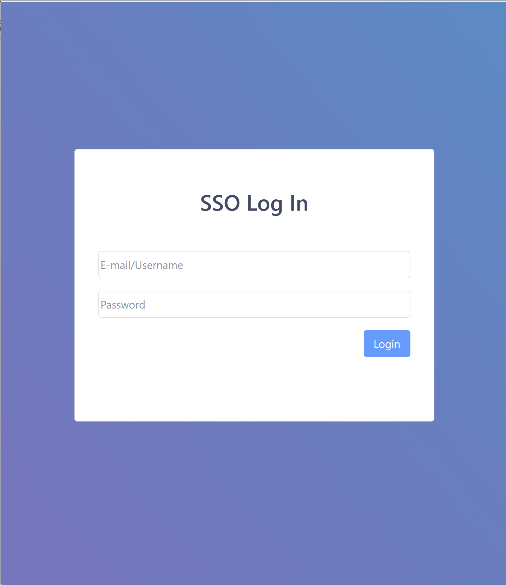
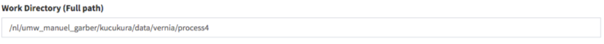

Quick Start Guide
Signing Up
This guide will walk you through how to start using Via Foundry
(formerly DolphinNext) pipelines. First off, you need to navigate to the
Via Foundry web page at https://www.viafoundry.com and click the
Log in button. You will be asked to enter your institute's log-in
information. An email will be sent to you once your information has been
verified.

Creating Profile
For information on how to set up and customize your Via Foundry profile to your specifications, please reference our Profile Guide.
Software Dependencies
In order to execute our pipelines, you have to install and validate certain software dependencies into your host machine.
To enable proper pipeline execution, Nextflow should be installed into your host environment. Since most of our pipelines isolate their dependencies within their Docker or Singularity containers, please install these softwares into your machine by following the guidelines below. If your platform doesn't support the installation of Docker, you can still use our pipelines with just Singularity.
- Installing Nextflow
- Installing Singularity (Version 3)
- Installing Docker
How to Add Software to Your $PATH Environment:
- JAVA Command (optional): If JAVA is not added to the $PATH environment, you can run the command (
module load java/8.0) to manipulate your $PATH environment and gain access to JAVA.- Nextflow Path or Command (optional): If Nextflow is not added to the $PATH environment, you can either enter the path of the nextflow (eg.
/project/bin), or run the command (module load nextflow) to manipulate your $PATH environment and gain access to new software.- Docker/Singularity Command (optional): You can run a command (eg.
module load docker/1.0.0ormodule load singularity/3.0.0) to manipulate your $PATH environment in order to gain access to new software.
You can set general run settings by following the Run Environments section:
- Executor of Nextflow: Nextflow itself is initiated with this method, which will be only used for running Nextflow itself.
- Executor of Nextflow Jobs: This setting will be used as the default setting for submitted jobs by Nextflow.
- Download Directory: Used to download shared pipeline files such as genome indexes. If your platform already has an allocated path for such files, please enter that path. Otherwise, you can set any path that you have permission to write. e.g.
/share/viafoundry/downloads
Once you complete these steps, you're now able to start using publicly available pipelines.
Running Pipelines
-
The easiest way to run a pipeline is from the main page, by clicking the
Pipelinesbutton at the top left of the screen. From here, you can investigate publicly available pipelines as shown below and select the pipeline you want to run by clicking on it.
-
Once the pipeline is loaded, you will notice a
Runbutton at the right top of the page.
-
Pressing this button opens a new window, where you can create a new project by clicking
Create a Project. After you enter and save the name of the project, it will be added to your project list. Now you can select your project by clicking on it, as shown in the figure below.
-
After clicking
Select Project, you may proceed with entering your desired run name, which will be added to your project's run list. ClickingSave Runwill redirect you to the "Run Page". -
Initially, in the header of the run page, an orange
Waitingbutton will be shown. In order to initiate a run, the following data need to be entered:
A. Work Directory: Full path of the directory from whence Nextflow runs will be executed.

B. Run Environment: The environment, discussed in the Profile page, within which you'd like to conduct your run. If an Amazon profile or a Google profile is selected, then the status of the profile should be "Running".

C. Inputs: Various values and filepaths, specifying what data will be processed and how, need to be entered. For additional information, please check the Adding Files section.
-
Once all requirements are satisfied, the
Waitingbutton will turn into a greenRunbutton as shown below. You can initiate your run by clicking theRunbutton. Please go through the Run Guide for detailed explanation about each module is used.
Adding Files
Remote Files
You can reach your remote files by entering:
- Full path of a directory: eg.
/share/data/umw_biocore/genome_data/mousetest/mm10/gz- Web link: eg.
https://galaxyweb.umassmed.edu/pub/dnext_data/test/reads- Amazon (S3) Bucket: eg.
s3://biocore/fastq- Google (GS) Bucket: eg.
gs://biocore/fastq
Geo Files
If you want to download and use NCBI (GEO data) in the pipeline, you can
simply use the GEO Files tab. Here are the few examples for GEO ID:
GSM1331276, GSE55190, SRR10095965
Upload Files
If you need to upload your local files and transfer into Target
Directory in the Host, you can use the Upload Files tab.
How To Cite Us
If you use Via Foundry (formerly DolphinNext) in your research, please cite:
Yukselen, O., Turkyilmaz, O., Ozturk, A.R. et al. DolphinNext: a distributed data processing platform for high throughput genomics. BMC Genomics 21, 310 (2020). https://doi.org/10.1186/s12864-020-6714-x
Support
For any questions or help, please reach out to support@viascientific.com with your name and question.